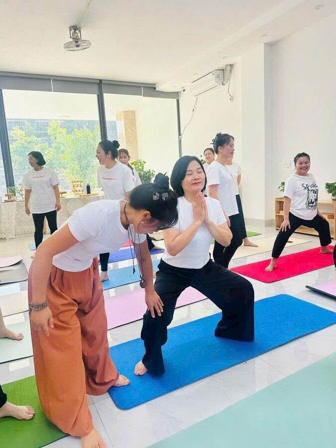

Yoga người lớn · Kiến thức cần biết khi tập yoga
10 nguyên tắc định tuyến cơ bản khi tập yoga

Học viên mới đến lớp hay hỏi cô: “Cô ơi, em tập vậy đúng chưa?” Câu trả lời của cô thường không nằm ở tư thế. Nó nằm ở bàn chân. Ở đầu gối. Ở cái vai đang nhô lên sát tai mà người tập không hề hay biết.
Định tuyến là gì? Tiếng Anh gọi là alignment, nhiều nơi gọi là căn chỉnh tư thế. Hiểu đơn giản: đặt từng khớp, từng đoạn xương vào đúng chỗ, để sức nặng cơ thể đi theo một đường gọn và an toàn.
Định tuyến đúng thì tư thế nhẹ đi hẳn. Cơ làm đúng phần việc của cơ. Khớp được che chở. Và hơi thở, lạ lắm, cũng tự trôi chảy hơn.
Từ khóa 200 giờ đầu tiên năm 2017, qua 300 giờ, rồi 500 giờ năm nay, càng học cô càng quay về mấy điều rất căn bản này. Mười nguyên tắc dưới đây là những gì cô nhắc nhiều nhất ở lớp người lớn. Gần như buổi nào cũng nói.
Mỗi hình có hai bên. Bên trái là cách đặt cô mong thấy. Bên phải là lỗi cô gặp nhiều nhất.
- 1. Bàn chân
- 2. Đầu gối
- 3. Hông
- 4. Cột sống
- 5. Vai và cổ
- 6. Bàn tay
- 7. Cổ tay
- 8. Góc vuông
- 9. Thẳng hàng
- 10. Song song
1Bàn chân: nền móng của mọi tư thế đứng
Mọi tư thế đứng bắt đầu từ đây. Cô hay bảo học viên tưởng tượng dưới mỗi bàn chân có bốn góc: (1) gốc ngón cái, (2) gốc ngón út, (3) gót trong, (4) gót ngoài. Bốn góc cùng ấn xuống thảm. Đều nhau.
Khi bốn góc chạm đất, vòm chân tự nâng lên một chút. Mắt cá đứng thẳng. Đầu gối phía trên cũng yên theo.
Đó là với bàn chân bình thường. Nhưng bàn chân mỗi người một cấu trúc, nên cô còn nhìn xem học viên thuộc kiểu nào.
Bàn chân bẹt: đi đứng, lao động hằng ngày, người bàn chân bẹt hay dồn lực vào rìa trong mà không để ý. Nên lúc tập, cô nhắc đưa lực ra rìa ngoài: về ụ ngón chân út và rìa ngoài gót chân.
Bàn chân vòm cao: ngược lại. Cố gắng đưa lực vào ụ ngón chân cái và rìa trong gót chân, tức là rìa trong của bàn chân.
Lỗi cô hay gặp: Dồn hết sức nặng vào mép trong, vòm chân sập xuống. Hoặc ngược lại, đứng lệch ra mép ngoài. Đứng lâu thấy mỏi cổ chân, và đầu gối xoay vào trong lúc nào không hay.
Thử ngay: Đứng tư thế quả núi (Tadasana). Nhấc cả mười ngón chân lên, xòe ra, rồi đặt từng ngón xuống. Cảm nhận bốn góc.
2Đầu gối: đi theo hướng ngón chân
Đầu gối là khớp bản lề. Nó thích gập duỗi theo một hướng thôi. Nên cô nhắc: gối hướng theo ngón chân thứ hai, thứ ba. Không đổ vào trong.
Ở chân duỗi thẳng thì ngược lại, cô nhắc đừng khóa gối căng ra sau. Giữ lại một chút mềm.
Lỗi cô hay gặp: Tư thế cái ghế, hai gối chụm vào nhau. Hoặc lúc đứng thẳng chân, gối bị đẩy ngược ra sau. Khớp gối gánh phần việc lẽ ra của cơ đùi.
Thử ngay: Ngồi tư thế cái ghế rồi nhìn xuống. Gối chụm vào trong thì mở nhẹ ra, cho gối nằm ngay phía trên ngón chân thứ hai.
3Hông: hai bên ngang bằng
Hông là trung tâm. Trong phần lớn tư thế đứng, cô muốn hai bên xương hông ngang nhau, như mặt nước trong một cái bát không sóng sánh.
Ở tư thế cây, chân trụ vững mà hông vẫn nằm ngang. Không đẩy hông ra một bên để lấy thăng bằng.
Lỗi cô hay gặp: Hông bên chân trụ trồi hẳn ra ngoài. Vẫn đứng được. Nhưng lưng dưới và mặt ngoài hông phải gánh hộ cả buổi.
Thử ngay: Đặt hai bàn tay lên hai bên xương hông, như cầm ghi đông xe đạp. Tay ngang thì hông ngang.
4Cột sống: dài ra, giữ đường cong tự nhiên
Cột sống không thẳng tắp như cây thước. Nó có những đường cong tự nhiên của nó. Định tuyến cột sống là giữ được những đường cong ấy, rồi kéo dài ra, từ xương cụt lên tới đỉnh đầu.
Lúc ngồi thiền cô hay nói: như có sợi chỉ nhẹ kéo đỉnh đầu lên trần nhà. Lưng dài ra là hơi thở tự sâu hơn. Cô không cần nhắc thêm.
Lỗi cô hay gặp: Ngồi gù, lưng tròn, ngực sụp, đầu đưa ra trước. Hoặc cố quá thành ưỡn cong lưng dưới.
Thử ngay: Ngồi xếp bằng. Lưng cứ tròn thì kê một chiếc gối hay khăn gập dưới mông. Đơn giản vậy thôi mà lưng thẳng lên ngay.
5Vai và cổ: vai xa tai, cổ dài
Cái này cô nhắc nhiều nhất. Nhiều tới mức học viên cũ nghe cô nói chữ “vai” là tự hạ vai xuống.
Giơ tay lên cao, vai mình có thói quen nhô lên theo, sát mang tai. Cô muốn giữ một khoảng trống giữa vai và tai. Bả vai trượt nhẹ xuống lưng. Cổ dài ra, nối tiếp cột sống, cằm hơi thu.
Lỗi cô hay gặp: Vai rụt lên, cổ ngắn lại, cằm hếch. Hết buổi tập thấy mỏi gáy hơn cả lúc mới vào lớp.
Thử ngay: Giơ hai tay lên, hít vào. Thở ra, tay giữ nguyên, chỉ hạ vai xuống. Thấy cổ dài ra chưa?
6Bàn tay: bàn chân thứ hai
Trong chó úp mặt, tấm ván, con mèo, bàn tay làm việc của bàn chân. Cô dặn: xòe đều năm ngón, ngón giữa hướng thẳng về đầu thảm. Gốc ngón trỏ và gốc ngón cái ấn chắc xuống. Đây là chỗ hay bị nhấc lên nhất.
Lòng bàn tay hơi khum, như đang úp lên một quả cam nhỏ. Lực trải ra khắp các đầu ngón. Không dồn cả vào gót tay.
Lỗi cô hay gặp: Ngón tay khép sát nhau, gót tay chịu hết sức nặng, gốc ngón trỏ bênh lên. Tập vài tuần là cổ tay bắt đầu kêu.
Thử ngay: Ở tư thế con mèo, nhấc lòng bàn tay lên một chút rồi đặt lại. Ấn gốc ngón trỏ xuống trước, rồi mới đến các ngón còn lại.
7Cổ tay: nằm ngay dưới vai
Cổ tay là khớp nhỏ. Mà người lớn mình thì gõ máy tính, cầm điện thoại cả ngày. Cô nhắc: cổ tay nằm ngay dưới vai, nếp gấp cổ tay song song với mép trước tấm thảm.
Nhìn từ bên cạnh, cánh tay là một cái cột thẳng đứng. Vai, khuỷu, cổ tay chồng lên nhau.
Lỗi cô hay gặp: Vai đổ ra trước cổ tay. Góc gập cổ tay hẹp lại, cả phần thân trên đè lên một khớp bé xíu.
Thử ngay: Tư thế cái bàn: cổ tay dưới vai, đầu gối dưới hông. Cổ tay hơi đau thì gập đôi mép thảm, kê dưới gót tay.
8Góc vuông: gối ngay trên mắt cá
Có những góc vuông giữ cho khớp an toàn. Rõ nhất là chân trước trong tư thế chiến binh: ống chân thẳng đứng, đùi gần song song mặt sàn, gối gập vuông ngay trên mắt cá.
Tư thế cái bàn cũng có góc vuông ấy. Tay vuông góc với sàn. Đùi vuông góc với sàn.
Lỗi cô hay gặp: Gối trước vượt quá mũi chân. Sức nặng dồn lên đầu gối thay vì xuống gót chân.
Thử ngay: Vào chiến binh, nhìn xuống gối trước. Gối che mất mũi chân thì bước chân trước xa thêm một chút.
9Thẳng hàng: một đường xuyên suốt
Nhiều tư thế có một đường thẳng chạy xuyên qua cơ thể. Tấm ván là ví dụ cô thích nhất: đầu, vai, hông, gót chân nằm trên một đường.
Trong chiến binh 2, gót chân trước thẳng hàng với vòm bàn chân sau. Thẳng hàng thì lực đi thông. Không bị gãy ở đâu.
Lỗi cô hay gặp: Hông võng xuống ở tấm ván, lưng dưới chịu hết. Hoặc chổng hông lên thật cao cho đỡ mỏi.
Thử ngay: Tập tấm ván cạnh gương, nhìn nghiêng. Hoặc nhờ người đặt một cây gậy dọc lưng: đầu, lưng trên, xương cùng cùng chạm gậy.
10Song song: hai bàn chân, hai bên hông
Hai bàn chân song song, rộng bằng hông, cỡ hai nắm tay. Nghe đơn giản lắm. Nhưng cô thấy rất nhiều người lớn đứng hình chữ V, mũi chân xoay ra ngoài mà không hề biết.
Song song còn ở chỗ khác nữa: hai bên hông song song mép trước thảm trong chiến binh 1, hai vai song song mặt đất.
Lỗi cô hay gặp: Mũi chân xòe ra ngoài, gối xoay theo, hông mất vững.
Thử ngay: Đứng trên thảm, nhìn xuống. Mép ngoài hai bàn chân song song với mép thảm chưa?
Điều cô muốn giữ lại
Định tuyến không phải để tư thế đẹp như ảnh. Mỗi cơ thể một khác. Xương hông người này rộng, người kia hẹp. Có người gân sau đùi cứng từ bé, có người khớp lại quá mềm. Nên cô coi mười nguyên tắc này là hướng đi, không phải cái khuôn để ép ai vào.
Đau nhói, tê, buốt là lúc dừng lại. Mỏi cơ thì khác. Với học viên mới, cô luôn hỏi trước về chấn thương cũ, về lưng, về gối, rồi mới bắt đầu.
Và nếu chỉ nhớ được một điều thôi, cô mong là điều này: đặt chân cho vững, thở cho êm, rồi mới tính chuyện đi sâu vào tư thế.
🌿 Muốn cô nhìn và chỉnh tư thế cho mình?
Đọc thì dễ. Tự thấy mình lệch ở đâu thì khó hơn nhiều, vì ai cũng đã quen với dáng đứng của chính mình rồi. Ở lớp online qua Zoom, cô nhìn và chỉnh từng người như ở lớp thật. Muốn đi kỹ theo mục tiêu riêng thì có lớp kèm 1 kèm 1 (500.000đ / giờ).